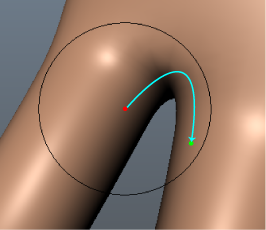
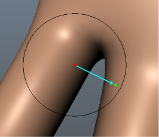

使用“3D UV 抓取工具”(3D UV Grab Tool)可在视口中对象的 UV 上拖动笔刷来移动它们。在笔刷周围的渐变上 UV 受影响。
使用这些选项可设置选择时发生的情况。
笔刷(Brush)
-
大小(Size)
-
设置工具的半径。
热键：按住 B 键并拖动或者使用鼠标中键向左/向右拖动可调整笔刷大小。按住 B 键并使用鼠标中键向左/向右拖动或者按住 Ctrl 键并使用鼠标中键向左/向右拖动，可从 0 调整笔刷大小。
提示： 单击钉图标 以保存选定工具的“笔刷大小”(Brush Size)设置。所有其他工具的未固定“笔刷大小”(Brush Size)设置共享相同的值。
-
大小单位(Size units)
- 允许您使用屏幕空间或世界空间单位设置雕刻工具的大小。默认情况下，用世界空间单位度量大小（例如，默认大小 100 = 半径 100 厘米）。选定“屏幕像素”(Screen Pixels)”时，用基于屏幕空间的像素度量大小。
-
强度(Strength)
-
确定工具影响曲面的程度。根据工具的不同，此值表示可用最大强度的百分比或者用世界空间单位表示的高度。
热键：按住 M 键拖动或使用鼠标中键向上/向下拖动可调整笔刷强度。按住 M 键并使用鼠标中键向上/向下拖动或者按住 Ctrl 键并使用鼠标中键向上/向下拖动，可从 0 调整笔刷强度。
-
锁定壳边界(Lock Shell Border)
-
镜像(Mirror)
-
沿指定的轴，将笔划从模型的一侧反射到另一侧。请参见使用对称进行雕刻。
注： 重新打开您的场景时，“镜像”(Mirror)设置保持不变。
-
禁用(Off)
-
不反射笔划。
-
对象 X(Object X)
-
跨局部空间 X 轴反射笔划。
-
对象 Y(Object Y)
-
跨局部空间 Y 轴反射笔划。
-
对象 Z(Object Z)
-
跨局部空间 Z 轴反射笔划。
-
世界 X(World X)
-
跨世界空间 X 轴反射笔划。
-
世界 Y(World Y)
-
跨世界空间 Y 轴反射笔划。
-
世界 Z(World Z)
-
跨世界空间 Z 轴反射笔划。
-
间距(Spacing)
-
控制笔划上的图章频率/连续性。根据工具的“大小”(Size)和“衰减”(Falloff)设置，可以将“间距”(Spacing)设置为较高值以优化工具行为和改进笔划的外观。默认设置为 6.25，范围介于 0 和 100 之间。根据工具设置，设置越高，在笔划上显示的间隙就越多。
-
稳定笔划(Steady Stroke)
-
通过过滤鼠标/光笔运动，有助于产生更平滑的笔划。启用时，向量显示在工具光标上，但在拖动距离等于向量长度之前不显示笔划。向量长度由“距离”(Distance)设置设定。请参见生成平滑工具笔划。
-
距离(Distance)
-
在工具光标上设置“稳定笔划”(Steady Stroke)向量的长度。
衰减(Falloff)
允许您指定工具效果如何从其中心点向其外边缘减弱（或不减弱）。衰减表示为一条可以编辑的曲线。另请参见调整雕刻工具衰减。
-
类型
- 衰减控制雕刻工具的强度如何从笔刷中心向其外边缘减弱。雕刻工具将衰减值指定给笔刷半径内的每个顶点（根据其与中心点的距离）。顶点距离中心点越远，应用的衰减就越多。以下衰减类型使用不同的方法来测量此距离，并生成唯一的结果。
-
曲面/体积(Surface/Volume)
- （默认）“曲面/体积”(Surface/Volume)是其他两种衰减类型的组合。为确定影响哪些顶点，笔刷沿曲面运动，直到它到达曲面结尾或者其半径的边缘（以首先满足的条件为准）。为确定每个顶点的衰减值，笔刷从笔刷中心向每个顶点绘制一条直线。
-
表面(Surface)
- 通过在其中心点处开始并沿曲面运动以查找顶点，笔刷了测量距离。它将搜索顶点，直至到达曲面结尾或者笔刷半径的边缘（以首先满足的条件为准）。根据顶点与中心点的距离，为顶点指定衰减值。希望雕刻工具与曲面一致时，曲面衰减很有用。例如，可以使用此衰减模式，将角色脸部的上嘴唇和下嘴唇分离。

注： 与使用其他衰减类型的雕刻相比，使用“曲面”(Surface)衰减的雕刻可能会导致性能降低。
-
体积(Volume)
-
通过从笔刷中心向笔刷半径内的每个顶点绘制一条直线，笔刷测量了距离。根据顶点与中心点的距离，为顶点指定衰减值。体积衰减影响笔刷半径内的所有网格，即使在单独的网格之间没有桥接也是如此。

-
衰减曲线(Falloff curve)
- 控制雕刻工具的剖面（横截面）。衰减曲线确定工具强度如何从中心向其外边缘减弱。根据设置衰减的方式，雕刻笔划可以逐渐羽化掉，与周围曲面平滑融合，或者显示有尖锐边缘。请参见调整雕刻工具衰减。
-
捕捉到栅格(Snap to Grid)
-
将点约束到“衰减曲线”(Falloff Curve)栅格。
-
重置曲线(Reset Curve)
- 将衰减曲线重置为其默认形状。
-
保存自定义曲线(Save Custom Curve)
- 将当前的衰减曲线保存到“工具设置”(Tool Settings)中的“自定义曲线”(Custom Curve)预设。
-
预设曲线(Preset Curve)
- 允许您通过从频繁使用的形状中进行选择来快速设置“衰减曲线”(Falloff curve)。
-
自定义曲线(Custom Curve)
- 允许您通过从自定义形状中进行选择来快速设置“衰减曲线”(Falloff curve)。
按住 Ctrl 键并单击自定义曲线图像可删除它。
光笔
-
最小笔刷大小(Min Brush Size)
-
指定将最轻的压力应用于笔时工具多小，以工具的“大小”(Size)设置的百分比表示。例如，“最小笔刷大小百分比”(Min Brush Size %) 为 100 表示没有大小变化，而不管应用的压力如何。
-
最小笔刷强度(Min Brush Strength)
-
指定将最轻的压力应用于笔时工具强度有多弱，以工具的“强度”(Strength)值的百分比表示。例如，“最小笔刷强度百分比”(Min Brush Strength %) 为 100 表示没有强度变化，而不管应用的压力如何。
显示(Display)
-
将笔刷定向到曲面(Orient brush to surface)
-
沿工具半径中心之下面的法线定向工具光标显示（在“3D 视图”(3D View)中）。此设置仅影响光标显示，而不会影响曲面上笔刷的效果。
-
显示线框(Show wireframe)
- 启用时，在您雕刻过程中会显示模型的线框。
-
显示冻结对象(Show frozen)
- 启用（默认）时，显示已冻结网格的区域。请参见冻结模型上的区域。
注： 启用“显示冻结对象”(Show Frozen)时，逐面着色器指定和逐顶点颜色不可见。